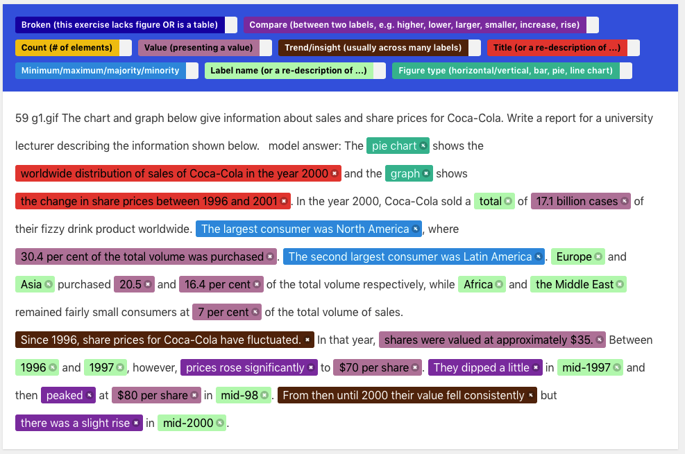

Corpus
Analysis Annotation Guideline
An
Annotation Example in the Email
Switching
the Annotation Level
The
First Author Addressing Concerns
Revision
to Annotation Guideline
The
first author (FA) piloted annotating a subset of captions on the
word/phrase-level, until saturation, which resulted in the 8 single-type tags
in Figure 1. This process is very similar to qualitatively coding. FA
summarized it as an “Initial Annotation Guideline” and sent out emails that
point annotators to the interface, the guideline, and the example. One
annotator proposed changing the annotation level into clause/sentence (Section
2.1), a necessary level of output unit to inform designing a captioning system.
Facing difficulties tagging clauses/sentences with multiple intertwined
aspects, we then piloted (until saturation) to add the 7 compound tags in
Figure 1. Annotators were encouraged to add new tags during annotation, but
none were added.
Among
the 8 single-type tags, FA populated “Count” as one of the 8 single-type tags. This
is because that before seeing any realistic captions, FA considers it necessary
to describe number of elements in figure captions. However, spans of “Count” never
showed up in the corpus, so in the final annotation guideline, this tag
disappeared.

Introduction
In this task, you are invited to tag word spans into different caption unit
types. This annotation is to conduct a small-scale corpus analysis on
human caption.
Our hypothesis is that natural and complex human caption paragraphs consist of
small, fundamental caption units, whose types are a finite set such as
comparison, presenting a value, min/max, re-iterating the
title, insights/trends.
Metadata information
To get started with each annotation, the paragraph starts with some metadata
information, including
• exercise identifier,
• writing hints,
Please use these
information to locate the actual figures from this pdf [pdf_url].
Note that some figures break in half by pdf page boundaries.
Alternative, you may download figures from [google_drive_link].
The directory is ~5MB.
If a paragraph lacks corresponding figure, or is presenting a raw table, please
tag the exercise identifier as "Broken (this exercise lacks figure OR
is a table)". Otherwise, there is no need to tag these
metadata information.
Example
For example, the first caption paragraph starts with a sentence "1002
IELTS_Writing_Task_1_Pie_Chart.gif You should spend about 20 minutes on
this task. Write at least 150 words.". 1002 and the .gif filename.
Adding new tags
We encourage you to add new tags if some span is a functional caption unit that
does not fit into these categories.
Please feel free to add new tags into the set (to add new tags, please visit
"Projects" on the right corner" -> "Labels" on
the left bar), and add corresponding tag definition and name in the
"Projects" -> "Guideline" (section "Definition
of tags") .
For example, as an open question, do we need a tag called "transition
word"?
Definition of tags
Below are the list of pre-defined tags and their definition.
1. Compare (between two values, e.g. higher, lower, larger, smaller):
span that describe the comparative value of two elements in the figure.
2. Count # of element:
span that describe the number of elements (bars, lines) in the figure.
3. Figure type (horizontal/vertical, bar, pie, line chart):
span that describe the type of the figure.
4. Label name (or a re-description of ...):
span that mention the label name of an element, usually on the axis (if a bar
chart), or on the legend (if a pie chart).
5. Minimum/maximum/majority/minority:
span that mention the maximum or minimum element in the figure.
6. Value (presenting a value):
span that presents the value of an element in the figure, e.g. "30% of
people prefer cycling because it is healthier".
7. Title (or a re-description of ...):
span that describes/re-iterates the title of the figure.
8. Trend/insight (usually across many labels):
span that describe a high-level insight of the figure.
9. Broken (this exercise lacks figure OR is a table)
tag the exercise identifier (3-4 digits at the beginning) as broken
exercise.
Final note
In the previous iteration, we hear comments about
"Sometimes it is hard to distinguish when to tag "Compare" vs.
"Trend/Insight", because trend/insight statements are mostly
based on value comparison...."
A: In this iteration, we define "Compare" are describing two or three
(essentially, a few) labels. While "Trend/insight" usually
describe across many labels, in a macro scale.
"I found that many of "label names" are mentioned when it is
"presenting values". Those two tags co-occur a lot too."
A: In this iteration, we encourage you to tag the minimum unit for each tags.
If a sentence is "the percentage who prefer to travel by car because
it is more comfortable is 40%", then "prefer to travel by car"
is a "label name" and "40%" is "value".
.
Once again, thanks for your annotation!
“Thanks for sharing this. I
have a question. Do you expect to have word (or phrase)-level annotations? If
the purpose of this study is getting insight about the flow of caption
sentences in the paragraph. I think the annotation should be sentence-level (of
course there could be some difficult cases to annotate, but if there are two
options of mixed annotation per words or an annotation for sentence, I think we
should prefer the latter). I don’t think annotations like value - trend – value
- value - legends might not be helpful in that sense. but according to your
example, it seems that you did per word in many cases mainly for labels and
values. How do you think?”
“More importantly,
however, I think the tag of ‘value’ or ‘label’ in the annotation task and those
for the caption type have totally different meaning, right? The former
indicates a specific word or phrase corresponding values or labels in the
figure, but the latter is the type of a caption sentence that ‘explains’ which
labels (or values) and how many of them are exist in the figure. It isn’t
restricted to one specific value or label. This caption is able to have
multiple of values or captions. Therefore I think we cannot use the finding
from this study for generating caption unit if we allow mixed annotation on
word and sentence, so annotation should be done per sentence. Different from
that example, I think chart type and title can be exist in one sentence (which
corresponds to your first example “the pie chart shows …”) because they still
indicates the type of caption sentence, not a specific word or phrase. For
“between 2010 and 2012, the sales rose significantly to 70%” yes, it could be
either of comparison or value as you said (or trend). But I think still it
should be one of them per participant or at least multiple tags for the
sentence, not word-/phrase-level tag.
For the second, given the same
figure, I think people can have similar tendency on the sentence flow when they
write a caption paragraph and that is why we are doing this study. However, I
don’t think there is a word-level flow in a sentence which influences the
overall flow in the paragraph for a given figure or context. This is more
likely selecting one of many possible templates like we’ve done so far. If you
want to learn and leverage this word-level flow, I think there should be a
separate study. This is just my rough thought, so we can discuss more or verify
through the user study.
For the third, I’m not sure
word-level annotation would be helpful to this interactive system. I think
sentence-level interaction might be much easier and comprehensive.
As a minor comment, it would be
good if you can delete first few sentences which are the same (the instruction
for test) for all cases.”
“Agreed with you suggestion on
sentence level annotation. Not word level - it looks a bit petty too.
The instruction can be distracting
- I will go ahead and delete the instruction for test.
Please pardon two extra questions:
for a sentence like "In 1955, the youngest age
group had the fewest number / amount of weight issues, with more
than 70% of 20-29-year-olds being assessed as having
a healthy weight.” Do you think half-sentence (or clause-level) level
tagging helpful? The former is a "min/max", the latter is a
“value". I think knowing there are two different tags, the flow of one
after another is helpful.
For a sentence like "between
2010 and 2012, the sales rose significantly to 70%”, How about a hybrid tag
named “trend+value” or “compare+value"
is helpful. Since tagging word-level loses the composition nature of the
sentence.
If yes to both questions, how
about this revised guideline below? If the guideline looks good, I will modify
the interface and let you know. If no to either question, please let me know
too.
1. Add hybrid tags to allow
compound/mixed types of captions (trend + value, compare + value, figure-type+title, etc.)
2. Spans is mostly sentence-level,
but does not necessarily need to be the whole sentence (from beginning to
period). Transition word shall be excluded at best effort.
3. Spans could be at half-sentence
(clause) level, separated by comma”
“I
would say yes to both questions. For the first sentence, I think that sentence
can be considered as ‘min/max’ and ‘value’ one after another or one sentence
with two tags. All the guidelines are looking good. Thanks.”
All other parts of the guideline
is the same, except we added tag sets such as “[Single] min/max”, “[Single]
value”, and “[Compound] min/max + value”. To differentiate [Single] vs. [Compound],
here are three examples:
1. For a sentence like "In
1955, the youngest age group had the fewest weight issues, with more
than 70% of 20-29-year-olds being assessed as having a healthy weight.”
Generally, single level tags would
be very helpful to post-hoc analysis. Nevertheless, it is a tradeoff between
granularity for analysis and cognitive load for you to annotate, whichever
feels comfortable to you.
2. Compound tags seem more
preferred for punctuation-inseparable sentences like “The two least important
reasons for going to work by car, with 14% and 11%, is that people need to
...”.
3. I felt challenging about the
sentence "Smoke levels increased a little more sharply during this time and peaked
in 1900 at about 500 micrograms.”. Which I tag as “[Single] Overall trend”
followed by “[Compound] Maximum + value”.